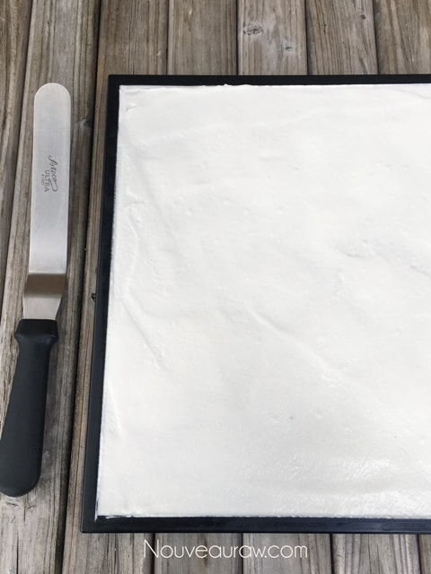

Young Thai Coconut Wraps
~ raw, vegan, gluten-free, nut-free ~
I can’t believe that I have never shared how to make Young Thai Coconut Wraps before! I have been making them for years… what a disservice. :)
Coconut wraps are great for creating fun and interesting new meals. Sometimes I make my own wraps, and other times I use store-bought ones. Click (here) to see the brand that I prefer over any others that I have tried.
Where I buy my coconut meat…
When it comes to making my own wraps, I purchase my coconut meat through Exocticsuperfoods.com. I am not sponsored by them, though I ought to be for all the plugs I give. Hehe Anyway, I have been ordering from them for about five years now, and truthfully, it’s just about the only way that I will buy young Thai coconut meat anymore. Long gone are my days of cracking open cases of coconuts to process the meat and water… then leaving the results in the freezer, while waiting for recipe inspirations. Even though their price may seem high, in the end, I find it much cheaper and far more reliable.
If you decide to crack your own coconuts, make sure that you remove all of the brown membranes from the white meat. And since the meat inside of the Young Thai coconuts is unpredictable it will take anywhere from 2-4 coconuts to get enough coconut meat to make wraps. If the flesh is super soft, almost transparent, I will save it for your smoothies. Please check out (this) post that I did, all about Young Thai coconuts. You might find it helpful.
Keep an eye on the drying process!
Another key factor in creating great coconut wraps is to be attentive during the drying process. Once I start drying the sheets of blended coconut meat, I check in on them every few hours. Once they are dry enough to flip over, I peel off the non-stick sheets. This speeds up the dry time so the air can fully circulate around the wraps. The edges will always dry out a little quicker than the center. And that’s ok, I just trim off about 1/4″ around the edges and enjoyed the scraps as a snack. You’ll know when a wrap is done when it isn’t tacky to the touch and yet remains flexible.
You can shape the batter into circles if desired or make large sheets that can be cut into various sized wraps. I hope you enjoy this simple but delicious recipe! If you are looking for a way to use these wraps, check out my Morning Glory “Egg” Salad Burrito recipe. Blessing, amie sue
Ingredients:
yields 1 (14 x 14″) Excalibur tray
- 1 lb Young Thai coconut meat
- 2 Tbsp coconut oil, melted
- 6 Tbsp water or coconut water
- Pinch Himalayan pink salt
Preparation:
- In the blender combine the coconut meat, coconut oil, water, and salt. Blend on high until creamy smooth.
- You shouldn’t be able to detect any lumps… pure silkiness.
- Pour the batter onto the non-stick sheet that comes with the dehydrator.
- Be sure the mesh sheet is underneath the non-stick sheet for stability.
- If you don’t have the non-stick sheets, you can use parchment paper, but not wax.
- Spread from edge to edge (evenly!) with an off-set spatula and clean up the edges.
- Dehydrate at 115 degrees (F) for roughly 4 hours. Place a new mesh sheet on top of the wrap, followed by another tray frame. Now flip the whole unit over. Remove the tray, mesh sheet, and peel off the non-stick sheet. Slide back in the dehydrator until dry.
- If the non-stick sheet is sticking in areas, don’t force the sheet off. Let it dry a little longer and try again. You could risk tearing.
- Dry just until you don’t see any wet spots and the wrap isn’t sticky to the touch. We want to keep it flexible.
- Once cooled, cut into desired shapes and sizes that you need for your dish or just plain enjoyment.
- To store, lay the coconut wrap on a sheet of plastic wrap and roll it up into a tube. Should keep for several months.

© AmieSue.com